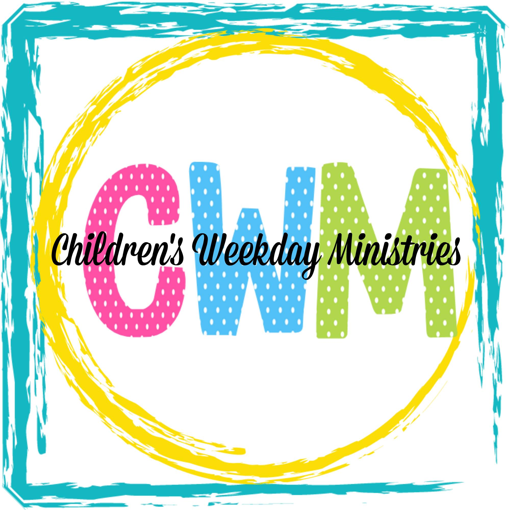

About Us
Children's Weekday Ministries is a “Grow with Me” Day School that prides itself on its well-rounded program. Our classes are purposely kept small. All our teachers are highly qualified through experience and professional training, as well as being warm, loving Christian women. All our teachers are required to attend yearly on-going in service training. Chapel is conducted on Mondays and Thursdays under the direction of our CWM Music Teacher and Wednesdays with our church pastor. No particular religious doctrine is taught; rather our chapel leaders stress the love of God and the love of one another. CWM operates under the auspices of First United Methodist Church of Humble (FUMC). We are licensed by the Texas Department of Human Resources and serve all races and denominations.

Mission Statement
Our mission is to provide creative learning experiences to stimulate our children
socially, emotionally, spiritually, intellectually, and physically in a Loving Christian Environment
Registration
To register, contact us here,
Give us a call at (281)-540-7000
Or - Feel free to stop by for an in-person tour!